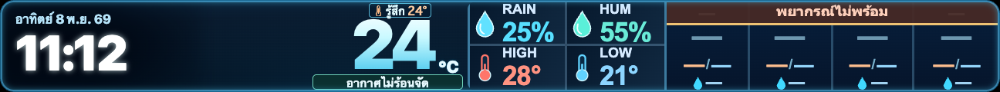
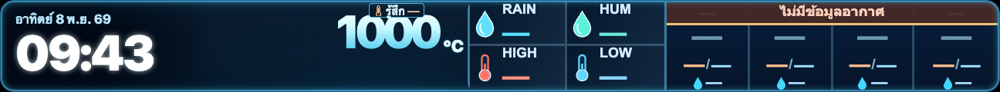
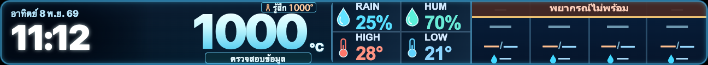

ป้ายคำแนะนำใต้ตัวเลข + เลขอุณหภูมิขนาดเท่าเดิม
ทดสอบบนจอ 432×40 px: คงตัวเลขขนาด 90px ในทุกกรณี รวมเลข 100 และ 1000 โดยขยับไปทางซ้ายแทนการย่อ ขณะเดียวกันเพิ่มป้ายสุขภาพใต้เลข โดยไม่บัง °C, Feels Like, คำเตือนเดิม และ Forecast
SIMULATED QA — ไม่ใช่สภาพอากาศจริงหรือประกาศเตือนจากหน่วยงานราชการ
ภาพเป็นผล Screenshot จาก Production Renderer บน Candidate Branch โดยป้อนข้อมูลจำลองที่ควบคุมได้เท่านั้น เว็บไซต์ Production ยังไม่ได้เปลี่ยนในรอบนี้
1. ทดลองเลือกสถานการณ์

SIMULATED · 24°C · ป้ายอากาศไม่ร้อนจัด · ไม่ใช่ค่าตรวจวัดจริง
2. เปรียบเทียบตัวเลข 1000 — ก่อน/หลัง
ก่อนปรับ — รุ่นก่อนย่อ Font

หลังปรับ — Font 90px ขนาดเดิมทุกหลัก

100°C และ 1000°C ในภาพเป็นเพียง Stress Test (การทดสอบขอบเขต) จึงขึ้น “ตรวจสอบข้อมูล” ไม่แสดงเป็นเหตุการณ์ Heatstroke ที่เกิดขึ้นจริง
3. หลักการจัดคำแนะนำ
| สถานการณ์ | ข้อความบน LED |
|---|---|
| อากาศเย็น | สวมเสื้อให้อุ่น / พกเสื้อกันหนาว |
| อากาศทั่วไป | อากาศไม่ร้อนจัด |
| Heat Index เริ่มสูง | พักและดื่มน้ำ |
| Heat Index สูง | หลีกเลี่ยงแดดจัด |
| Heat Index อันตราย | ระวัง Heatstroke |
| ค่าผิดปกติ / ไม่มีข้อมูล | ตรวจสอบข้อมูล / ซ่อนป้าย |
Heat Index (ดัชนีความร้อน) รวมอุณหภูมิและความชื้น อิงช่วงเกณฑ์ US National Weather Service ไม่ใช่ประกาศเตือนภัยทางการของไทย ส่วนป้ายสวมเสื้อเป็นคำแนะนำทั่วไป ไม่ใช่เกณฑ์อันตรายสากล และไม่ใช้คำว่า “ไม่อันตราย” เพราะไม่มีอุณหภูมิเดียวที่ปลอดภัยต่อทุกคน
แหล่งอ้างอิง: NWS Heat Index · WHO Heat and health (2026) · CDC Heat and Your Health